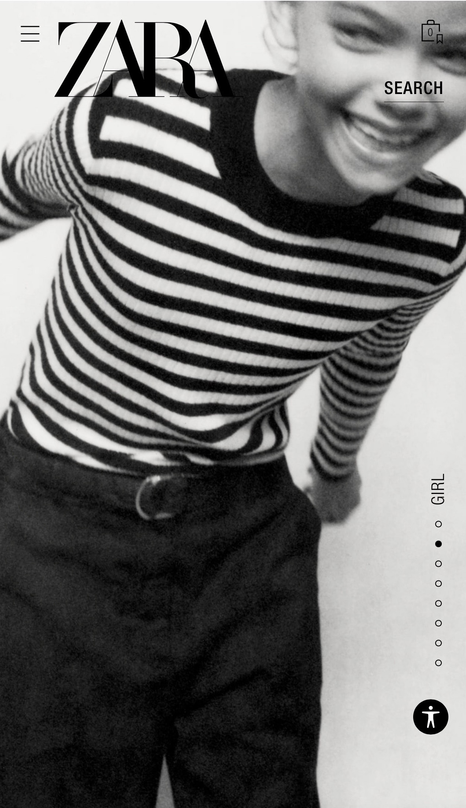
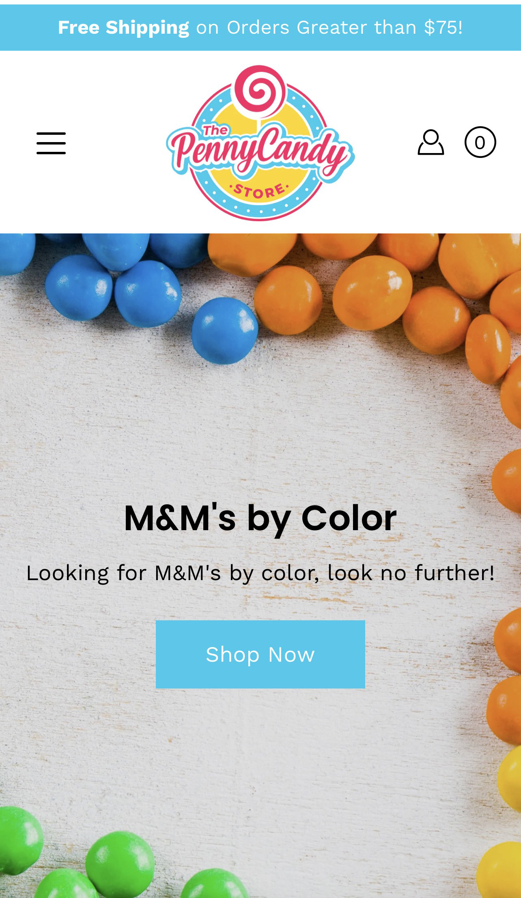

Contrast/Focal Point
Zara Zaras home page is a perfect example of FOCAL POINT and CONTRAST. The focus of the page is the shirt. It is center page and in clear focus compared to the head and face. It catches the eye of the viewer immediately. Zara is a clothing retailer and used the focus of the image to convey it.
The striped shirt is most eye catching to the viewer and is distinct from the rest of the design elements on the page. Zara is a clothing retailer; it is impossible to emphasize everything on the page. Zara used an image of a shirt, to stand out as the rest of the image fades into the background.
The contrast of the image guided the viewers eye to the focal point. The stripped shirt with a black and white image uses a visually different element that guided the viewer to the focal Point. The contrast highlighted important information about the page and added a dramatic yet playful effect to the design. Zara used a plain white background with primarily black image. It worked. The contrast between the two-color values is obvious to see. Black and white are the maximum contract you can achieve.
Zara repeated the contrast throughout the mobile site making it easy to know the focal point. My only suggestion for this page (not that anyone is asking) was the logo covering the shirt. It felt out of place overlapping the strips with solid black. The logo was overlooked in creating a visually aesthetic logo. In the end, the logo should be clear of any overlap. I kept this example because of the contract to focal point. Not the presentation of the logo.
Use of White Space
The Penny Candy Store The Penny Candy Store used negative or white space to draw the viewer’s eye to the center of the page, M&M by Color. By having the colors of M&M’s around the border they created a compositional balance that lead to the headline 1, colors of M&M’s. It was intriguing for the consumer to click on the headline link and see what colors of M&Ms were available to purchase. With minimal use of the candy images as the border, my eye was led to the focus of the page.
It is popular in design to cover the page with every color of candy available, saturating the first glance with what is available, leaving no mystery, no reason to click more because you already know from the overload of images on the main page. Using the negative space created a focal point for the consumer to know what the website was about.
This design principal was consistent throughout the website. The designer gave a small hint of what candy they were promoting on the page using minimal images and text. I found it refreshing from the other website for candy. M&M was clean and concise as a result it was easy to navigate and kept me attention to continue through each page.
Negative space is one of my favorite design techniques. By decluttering the composition and providing the images or text with space for the consumer or viewer to breath it allows the user to take a moment and breath. If the page is too busy, the techniques will be lost and the consumer will click to another site because of “TMI” !
Rule of Thirds
Jacadi ParisJacadi used “rule of thirds” as the design technique on the site. “The rule of thirds” effectively break up a page into different sections. Jacadis page is separated into three sections using rows that form a grid. The top row is a low contrast black and white images of a boy and girl, confirming the content in the site. The center row is informational text and the third is links for the different pages on the site.
The sections in the grid are the same size and are spaced evenly on the page. The center row has aligned all text to center and the third row has spaced the links evenly, aligning them in small columns with a light grey background and dark grey text creating a color pallet that was used throughout the site.
I picked this Jacadi because of the image at the top. It was an obvious pick to demonstrate “the rule of thirds”. I found the sections to be proportionally aligned in the grid and guided the center of my focus
Jacadi is simply organized to showcase the highlights of the site. The top row and the bottom row repeat the color scheme created on the site. The center sections text headlines are hot pink implementing the technique of contrast. The hot pink immediately drew My eye to the headlines, the sale, and percentages of savings. In the 3rd section there was a button constructed in hot pink made to highlight a new sale. The paragraph text was in the same muted grey as the other sections. Using the grey against the white background repeated the color combination of the entire site. The contrast between the hot pink, white and grey put a focus on the most import information on the site, the sale.
In using the “rule of thirds” Jacadi created a balance and is in line with how the viewers eye naturally scans the field.